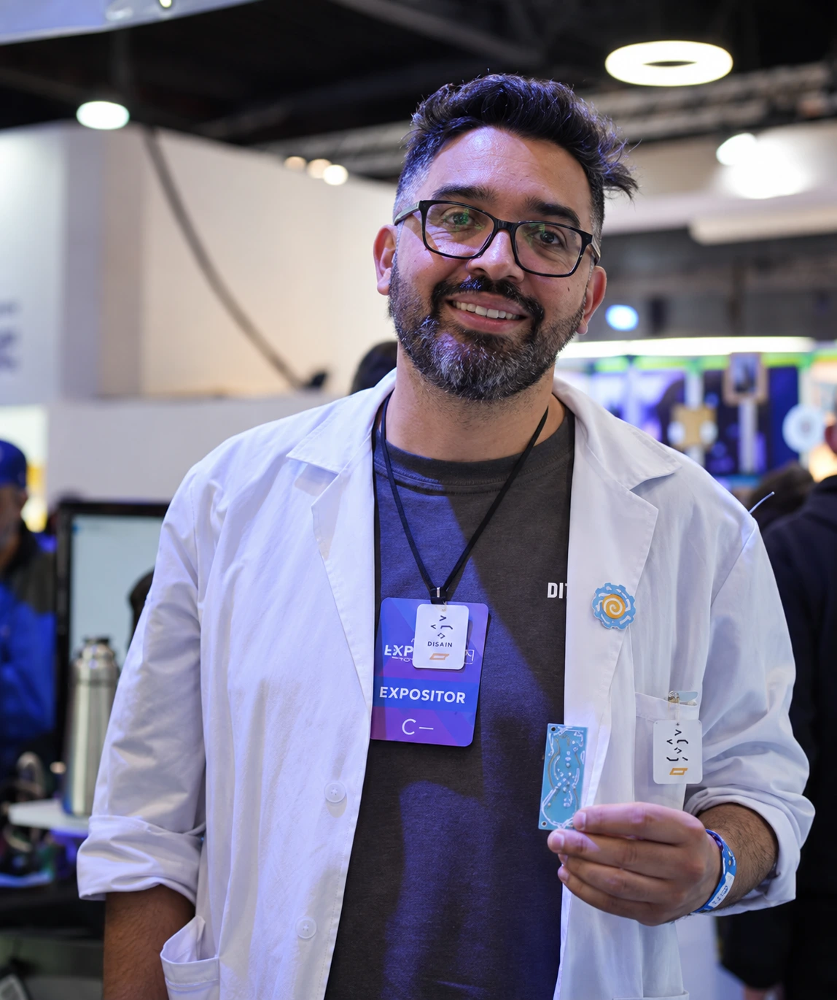

@profepabloticPablo Melgarejo
Docente e impulsor de la impresión 3D en el aula. Completar con su biografía completa y trayectoria.
- Docente de NTICx / Tecnología de la Información
- Referente Educativo 3D Bambu Lab
- Computación, Robótica y Domótica